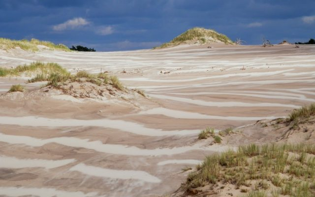

Ciekawe Miejsca w Polsce
Witajcie dziś pokaże wam ciekawe miejsca w Polsce:
Miejsce nr.1
Polska Sahara - Łeba, wydmy.
Największy pas ruchomych wydm w Europie znajduje się w Słowińskim Parku Narodowym w okolicach Łeby.
Jest to unikatowe zjawisko przyrodnicze. Wydmy osiągają 30-40 metrów, a ich prędkość przemieszczania
może wynosić nawet 10 m na rok. Przesuwają się za sprawą wiatru, który przesypuje ziarenka piasku
z wierzchołków wzniesień. Najwyższa z nich – Łącka Góra ma ponad 40 metrów, a przebywając na jej
szczycie można się poczuć jak na prawdziwej pustyni. Zwiedzenie „Polskiej Sahary”
jest obowiązkowym punktem na trasie turystów przebywających w Łebie.

Miejsce nr.2
Góry Stołowe
Góry Stołowe położone są w Sudetach, między miejscowościami: Radków, Kudowa Zdrój i Duszniki-Zdrój w Kotlinie Kłodzkiej.
Góry Stołowe zbudowane są z piaskowców z dodatkiem margli ułożonych poziomo – stąd też nazwa gór,
bo są płaskie - tak jak stół.Nie są to wysokie góry - najwyższy, szczyt to Szczeliniec Wielki (919 m n.p.m.).
Mimo niezbyt dużej wysokości, pasmo to jest widoczne z oddali,
jako blok skalny wystający ponad okolicę, porośnięty iglastym lasem.
Miejsce nr.3
Babia Góra „Królowa Beskidów” (1725 m n.p.m.)
Wyprawa na najwyższy poza tatrzański szczyt w Polsce to prawie obowiązkowy punkt dla
wszystkich kochających góry. Wejście zimą przy dobrej pogodzie i dla odpowiednio przygotowanych turystów nie jest,
wbrew pozorom, trudne technicznie. Babia Góra z racji swojej wysokości oferuje prawdziwie wysokogórską wspinaczkę
nagrodzoną wspaniałymi widokami – sławne wschody słońca! Jest zdecydowanie godna zdobycia!
Ponieważ jest to również jeden z najpopularniejszych szczytów w Polsce, dobrze jest zaplanować wyjście w dniu powszednim.
Strona została stworzona przez Mateusza Stanikowskiego